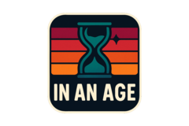
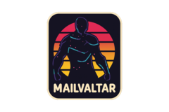
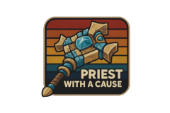
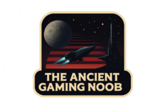

Azuriel finds Enshrouded 1.0 neither quite Valheim nor quite action RPG, but 30 hours later he’s mostly won over despite the constant base-hopping friction.

Mailvaltar checks in on Neverness to Everness 1.4, liking Blackbird’s Salem-style story less than the band drama around Akane and Lines.

Shintar pokes at retail WoW leveling, arguing freer zone scaling helps but empty worlds and weak quest XP still make the journey feel off.
Wes spotlights the long, very human fan-translation saga behind The Legend of Xanadu, with 15 years of hacking, art, and collaboration finally paying off.
Marc kicks off a hub for Retro XP’s Wii 20th-anniversary coverage, basically planting the flag for a full celebration of Nintendo’s motion-control era.

Wilhelm tracks Fantasy Critic League’s week 44 shakeups as Phantom Blade Zero lands strong, One Piece: Grand Gourmet slips, and Shawn still can’t climb the standings.
The Chronicler reports two happy, exhausting days at SPIEL Essen 2026 packed with demos, booth visits, surprise finds, and plenty of board-game talk.
Ghastly lines up a spooky backlog with World of Warcraft’s Hallow’s End on Chromiecraft and the vampire RPG Cabernet stealing the show.
Tofutush’s October was low-key but busy enough: Minecraft glowstone grinding, a restarted conlang, a digital orrery, and signing next year’s apartment lease.
Juhis recaps a slower Djangonaut week of DjangoGirls PRs, pytest sessions, CI weirdness, and an RSVP-status bug fix still carrying into next week.
Bruce Schneier points to an eye-popping spike in AI-assisted vulnerability discovery and sums it up plainly: software security has entered a new world.
Axxuy is doing a personal November writing challenge, aiming for 10,000 blog words since NaNoWriMo is gone but the urge to write isn’t.